Manage a clean project
On this page
- Generate results
- Clean data
- Process cleaned data
- Revert changes
- Regenerate results
- Edit a clean project
- Archive a clean project
- Duplicate a clean project
After creating a clean project, you can begin the cleaning process to get a more ready-to-use set of data. In this article, you will learn how to load data for cleaning, perform data cleaning operations, and publish the cleaned data back to CluedIn.
The following diagram illustrates the main actions available within the clean project. Each of these actions is described in detail in the following sections of this article. In addition to these actions, you can always edit or archive the clean project if necessary.
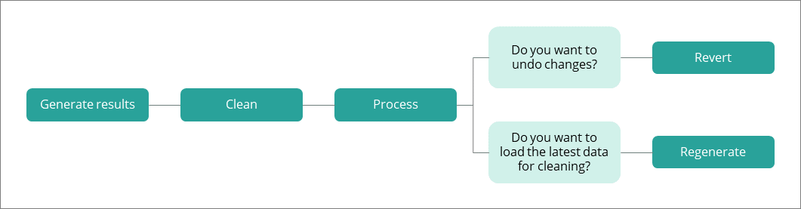
Generate results
Generating results retrieves the values that match the criteria from the clean project filter and loads them into the clean application.
To generate the results
-
In the upper-right corner of the clean project, select Generate Results, and then confirm your choice.
You can track the result generation status in the progress bar. When the results are generated, the status of the clean project becomes Ready for clean, which means that you can start to clean the data.
Clean project and real-time data
When you generate the results for the clean project, CluedIn captures a snapshot of data for you to clean. It’s important to note that you’re working with this snapshot, not real-time data.
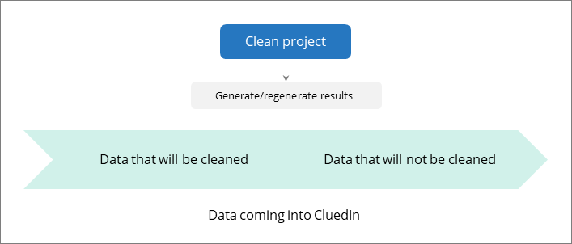
When new data with the same issues appears in CluedIn, you’ll need to clean it as well. You can regenerate the results in the same clean project or rely on rules generated by CluedIn based on your actions in the clean project. You’ll find more details about generating rules from the clean projects in Process cleaned data.
Clean data
After generating the results, you can open the clean application to start fixing data issues.
To open the clean application
-
In the upper-right corner of the clean project, select Clean.
The clean application containing records that need to be cleaned opens in the same page.

To work with the clean application
-
Transform the contents of the cells in a column:
- In the column heading, expand the menu, and then select Edit cells > Common transforms. Then, choose the transformation option (for example, collapse consecutive whitespace or transform the text to title case). For more information, see Clean application reference.
-
Edit the contents of a column using a text facet:
-
In the column heading, expand the menu, and then select Facet > Text facet.
A text facet collects the total contents of cells in a column and matches them up. To edit an entry in the facet display, hover over the facet and select Edit. You can then enter a new value that will be applied to all identical cells in the column, allowing for efficient mass editing. This is a great option for fixing typos, whitespace, and other issues.
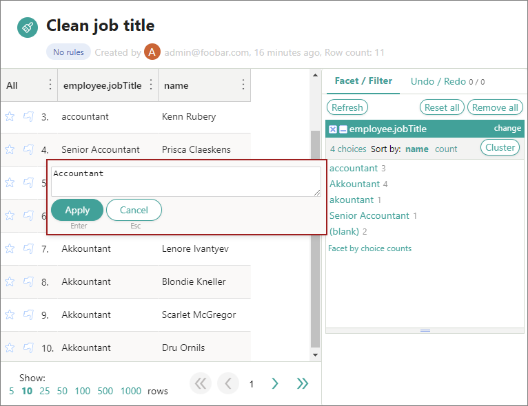
-
-
Cluster and edit the contents of a column:
-
In the column heading, expand the menu, and then select Edit cells > Cluster and edit.
This feature helps you find groups of different cell values that might be alternative representations of the same thing. You can explore different methods and key functions to see how many clusters can be found in your data. The following screenshot shows that all values in a cluster will be changed to the new value.
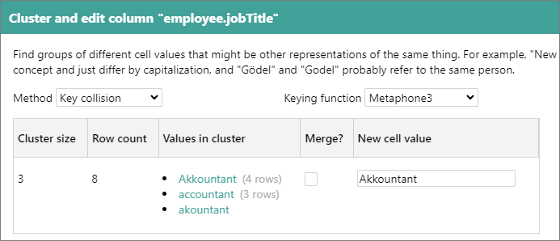
-
-
Edit one cell at a time:
-
Hover over that cell and select Edit. A pop-up window appears where you can edit the contents of the cell. You can apply your changes to all identical cells in the same column.
Use this option sparingly. The most efficient way to clean your data is through automated and bulk operations.
-
Process cleaned data
When you have cleaned the data, send it back to CluedIn. Processing cleaned data replaces incorrect values in golden records with the corrected ones.
To process cleaned data
-
In the upper-right corner of the clean project, select Process.
-
In the Stale data strategy section, choose an option for dealing with stale data if it is identified during processing:
-
Skip stale data – if the records from the clean project contain more recent data in CluedIn, then such records won’t be processed.
-
Write stale data – if the records from the clean project contain more recent data in CluedIn, they will be processed.
-
-
If you want to automatically fix the same data issues that might appear in future, leave the Enable rules auto generation checkbox selected.
-
Confirm that you want to process the data.
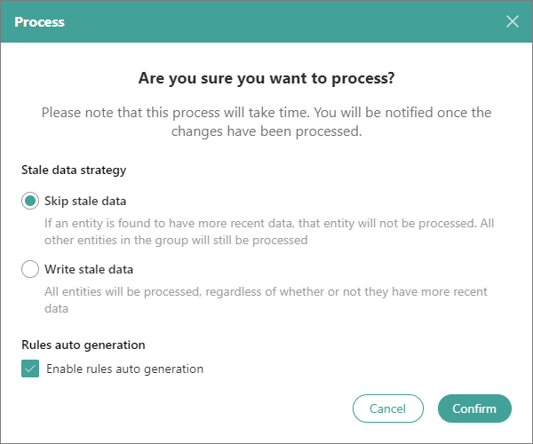
You can track the processing status in the progress bar. When the cleaned data is processed, the status of the clean project becomes Processed. It means that the corrected values have been submitted to the golden records in CluedIn.
Automatic rules generation
Once you fix a data issue, it’s likely you’ll need to fix the same issue again in the future. To save time and ensure data accuracy, you can generate rules based on your actions in the clean project. There are two ways of generating rules in the clean project:
-
By selecting the Enable rules auto generation checkbox in the processing confirmation dialog.
-
Be selecting Generate rules on the Rules tab of the clean project.
In both cases, rules will be generated only if you made significant changes in the clean application (for example, changed all values in the column to upper case). If you edited individual cells, rules won’t be generated. You can find generated rules in the appropriate tab in the clean project.
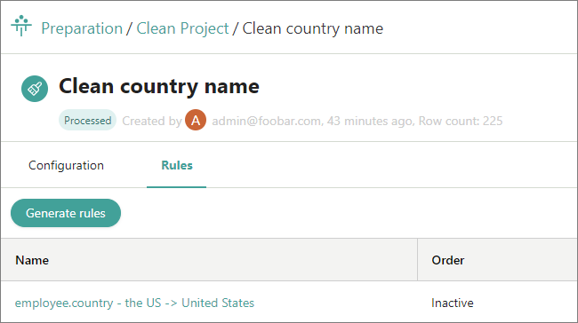
The rules from the clean projects are also stored in Management > Rule Builder > Data Part Rules. Note that the rule is initially inactive. To apply the rule to the records that will be loaded to CluedIn in future, activate the rule. This way, the values that correspond to the configuration parameters from the rule will be automatically fixed when the records are processed.
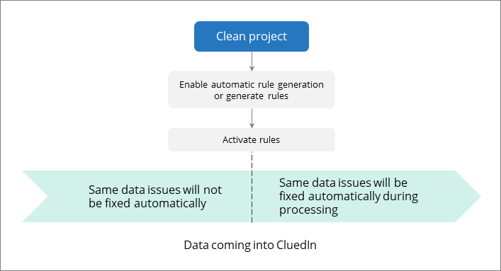
Clean project and streams
If the data from the clean project is streamed to the export target, the stream will automatically receive the cleaned data after processing. This ensures that the data in the export target is automatically updated with the cleaned values.
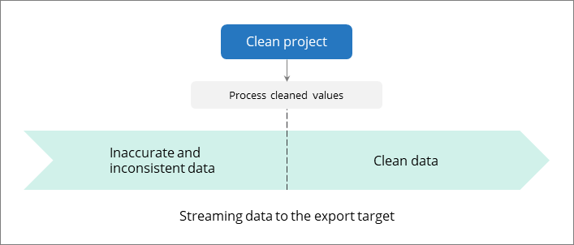
Revert changes
You can undo changes made to values in your golden records after processing the cleaned data. Reverting these changes restores the values to their pre-cleaning state.
To revert changes
-
In the upper-right corner of the clean project, select Revert Changes, and then confirm your choice.
As a result, the changed values are removed, returning the values to their pre-cleaning state. The status of the clean project becomes Ready to process, which means that your previous changes are saved in the clean application.
Reverting is not tracked anywhere.
Consider the following actions that you can do after reverting changes in the clean project:
-
If you want to continue working with the same set of data, go to the clean application and make the needed changes.
-
If you want to get the latest data, regenerate the results, and start the data cleaning process. Keep in mind that regenerating the results in this case removes your progress in the clean application.
Regenerate results
Generating results for the clean project creates a snapshot of the data. If new data is loaded into CluedIn, it won’t be automatically added to the clean project. To add the latest data to the clean project, you should regenerate the results.
Regenerating the results will cause you to lose all previous progress in the clean project. So, if you have already cleaned the data and want to publish your changes, process the cleaned data first, and then regenerate the results.
To regenerate the results
-
In the upper-right corner of the clean project, select Regenerate, and then confirm your choice.
As a result, the data that matches the filter from the clean project is loaded to the clean application. Next, you can start the data cleaning process.
Edit a clean project
You can edit a clean project to make necessary changes in project name, description, filters, and properties that you need to clean.
If you change filters or properties, all previous cleaning progress will be lost and the project will be regenerated.
To edit a clean project
-
In the upper-right corner of the clean project, select Edit.
-
Make the needed changes.
-
Select Save. If you changed filters or properties, confirm that you want to save changes.
If you changed the name or description, the status of the clean project remains the same. Otherwise, it becomes Ready for clean.
Archive a clean project
You can archive a clean project if you no longer need it or if you created it by mistake. You can also archive a clean project if you’re confident that you won’t need to run it again in the future or if you’ve already generated rules to address the same data quality issues.
Archiving does not affect the cleaned data that has been submitted to CluedIn. After the clean project is archived, it cannot be unarchived. Archived projects are available only for viewing.
To archive a clean project
-
In the upper-right corner of the clean project, select Edit > Archive. Then, confirm that you want to archive the project.
The status of the clean project becomes Archived, and you can no longer work with the project.
To view an archived clean project
-
In the upper-right corner of the Clean Project page, select View Archived.
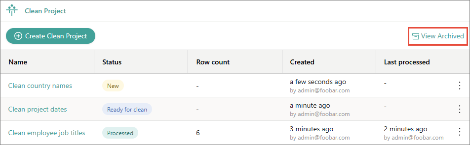
-
From the list of archived clean projects, select the one that you want to view.
Duplicate a clean project
Duplicating a clean project means creating a new clean project with the configuration of the existing project. This configuration includes filters and properties for cleaning but does not include the cleaning activities performed in the project and data part rules generated from cleaning activities.
You can duplicate a clean project if you want to perform different cleaning activities on the same set of golden records.
Duplication is a beta feature. To access it, go to Administration > Feature Flags, and enable the Duplicate Actions feature.
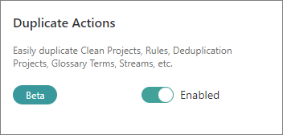
To duplicate a clean project
-
In the list of clean projects, find a project that you want to duplicate. Then, open the three-dot menu for the project, and select Duplicate.
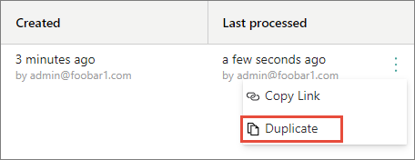
-
In Project Name, review the default name of the new clean project and modify it if needed. The default name is created by adding _duplicate to the name of the project that you’re duplicating.
-
In Filters, review the filters that will be duplicated for the new clean project.
-
In Selected Properties, review the information about the properties that will be duplicated for the new clean project. To view the list of properties, select View All Properties.
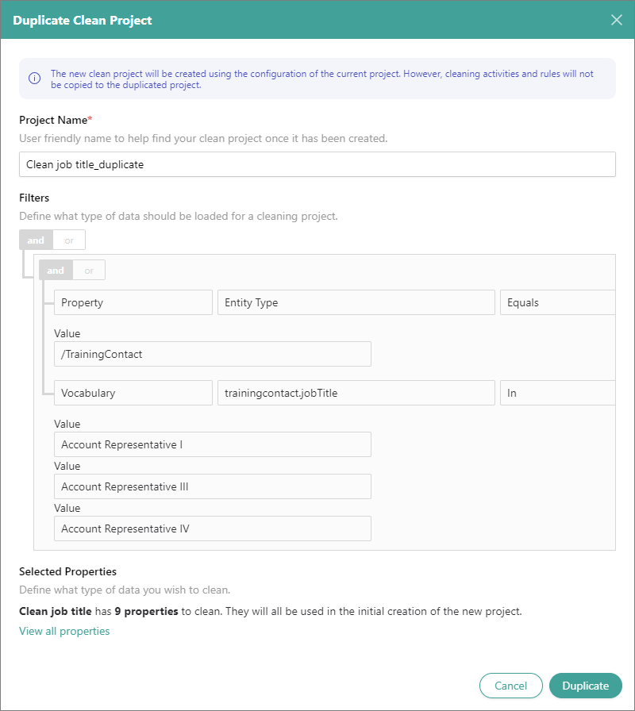
-
Select Duplicate.
The new clean project is created, and it has the New status. Now, you can modify the clean project configuration if needed. When you reach the desired configuration, save your changes, generate results, and then start the cleaning activities.